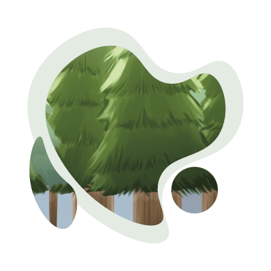

《苔石》
在遺忘的森林深處，靜靜佇立著一座廢棄的寺廟。清晨的陽光穿透濃密的樹葉，地面上覆滿青苔，四周寂靜無聲，偶有鳥鳴低語。寺廟旁，一尊小地藏石像沉睡多年，身上早已覆滿青苔。
它睜開朦朧的眼，發現自己的身體滿是青苔與斑駁痕跡的模樣讓它驚訝且嫌棄。它輕輕伸出手，試圖拂去身上的青苔，但這些綠色的纏繞彷彿已成為它的一部分，頑固地不肯退去。
小地藏抬起頭，羨慕地望向小石群。那些被陽光沐浴的石頭，
乾淨無瑕，絲毫沒有青苔的痕跡。它心想：為什麼它們可以如此潔淨，而我卻被這些討厭的青苔覆蓋？ 它試圖靠近一束陽光，希望藉此去除青苔。然而，微弱的陽光不足以改變什麼，甚至引來了小石群的不滿。它們感到自己的光被擋住，於是向小地藏發起攻擊。驚慌失措的小地藏只得落荒而逃。
途中
逃離了寺廟，小地藏孤獨地在森林中徘徊。四周的樹木高聳，濃密的樹葉遮蔽了大部分的光線，讓它感到迷茫且無助。就在它快要絕望之際，前方的樹縫中透出了一道耀眼的光。那道光如同一條指引的道路，吸引著它的目光。
小地藏決定向著光前行。雖然一路上跌跌撞撞，身上的青苔因碰撞開始脫落，但它依然咬牙堅持。然而，當它來到一條河邊時，卻被困住了腳步。清澈的河水靜靜流淌，彷彿在輕聲訴說它的恐懼。小地藏害怕再次被水滋養出更多的青苔，於是選擇在河邊的樹下休息。
一年過去，小地藏被一陣騷癢驚醒。一隻小鳥正停在它的
身上，啄食著青苔。它驚覺，自己身上的青苔又變得更加茂密。小鳥歪著頭告訴它：如果你一直停留在這裡，只會被青苔吞沒。嘗試渡過河流吧，或許會有不同的結果。
小地藏猶豫再三，終於鼓起勇氣踏入河中。河水冰涼，讓它感到恐懼，但它堅定地一步步向前。意外的是，河水並未讓青苔增長，反而將它身上的青苔沖刷得更加乾淨。當它踏上河的另一邊時，心中湧起一股從未有過的
重見光明
輕鬆與自信。
離開河流後，小地藏與小鳥繼續前行，終於走出了森林。眼前是一片廣闊的大草原，陽光無遮無擋地灑下，溫暖而明亮。小地藏站在陽光下，感受到身上的青苔完全退去，露出了它原本潔淨的樣貌。
此刻，它明白了：停滯不前只會讓恐懼與束縛越來越深，唯有直面挑戰，才能找回真正的自己。
風吹過草原，陽光下的小地藏不再是當初那尊沉睡的石像，而是一個找到自我價值的旅者，靜靜地站在廣闊天地間，迎接生命的每一縷陽光。
完結